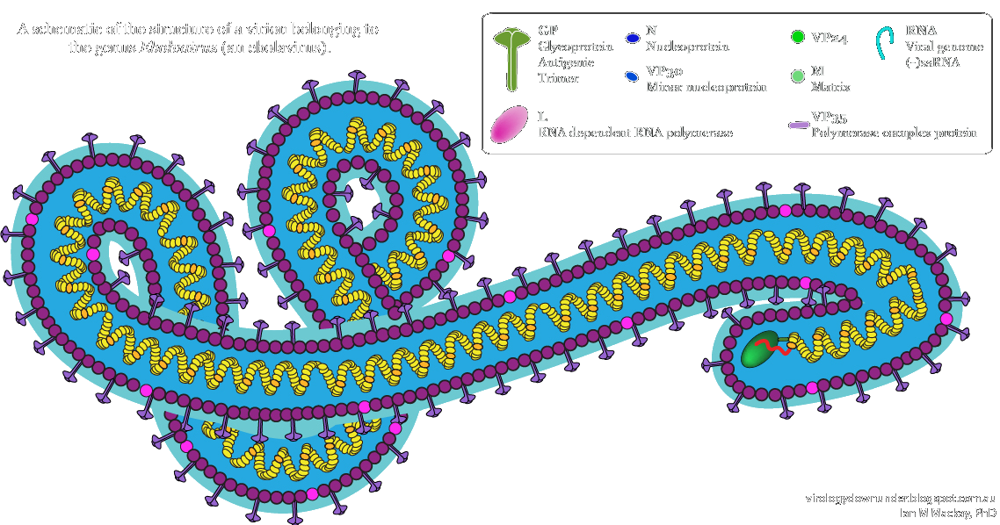

When people talk about Ebola, they are often referring to the Ebola Virus Disease (EVD), also known as Ebola Hemorrhagic Fever (EHF). In humans, the disease is caused by four of five diseases within the genus Ebolavirus.
Ebola Virus (EBOV)
(also Zaire Ebolavirus) |
Bundibugyo virus (BDBV) |
| Sudan vrus (SUDV) |
Taï Forest virus (TAFV) |

The ebolavirus is a virus, meaning it is not alive and cannot reproduce on its own. It must take body cells as its host cells to reproduce.